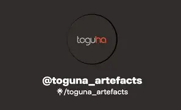

Make the World know What Colors are capable of doing
By the above qoute we mean, colors have an effect on what they are on and can make unseemingly good views to better views than how they were

Toguna is a comapny that started in 1992, owned by a lady called Rose. Her love of colors was so profound it was the one that led her into opening Toguna.
The employees she had were mostly encouraged by her love of colors, the company first had one employee for about two months. So Rose and her one employee were
not discouraged by their number rather they still were focusing on their mission which was to " Make the World know What Colors are capable of doing". Their
vision was parallel to their mission, which was "Colors can change the attitude of any thing", they wanted to see the vision in action. Thier target audience was
Fashion lovers and House owners.
Toguna's use of colors became more broad in such a way that, they expanded their application of colours.
The concept and love of colours wasn't enough to make them reach their vission and mission. So by expanding,
they now started to be more involved in art It's self than colours, by manifacturing goods such as chairs,
masks, shields etc...
Our Logo

Make the World know What Colors are capable of doing
By the above qoute we mean, colors have an effect on what they are on and can make unseemingly good views to better views than how they were
Let's first disscus what a vision is, it is a clear goal or guide that people have, almost similar to a dream. It's what defines a human, so us as Toguna have the vissions
below...
Colors can change the attitude of anything.
Take for instance a house, ahouse can be old and not so good looking, but with a touch of colours and art inside the house, it has the potential of being a life giving place.